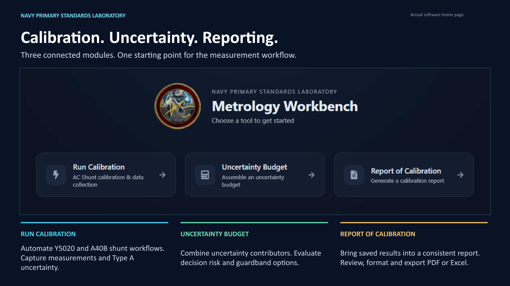

Metrology Workbench
A presentation and demonstration kit introducing calibration, uncertainty analysis and reporting through the actual software.


The slide sequence
Introduce the suite with the home page, then pair each module overview with a view of the software in use. Each image below opens at full resolution.


Watch the software in use
These silent recordings capture real browser interactions with demonstration data. Use each player's full-screen control for a presentation. Extract the ZIP first, then open this page in Edge or Chrome.
01 · Review a saved calibration
Open the module, select a saved session and test point, inspect the result, and switch between chart and table views.
02 · Explore an uncertainty budget
Select the demonstration voltage session, inspect contributors and their relative impact, and compare measurement points.
03 · Preview a report
Open a saved demonstration report, review the section controls, and scroll the PDF preview to the measurement table.